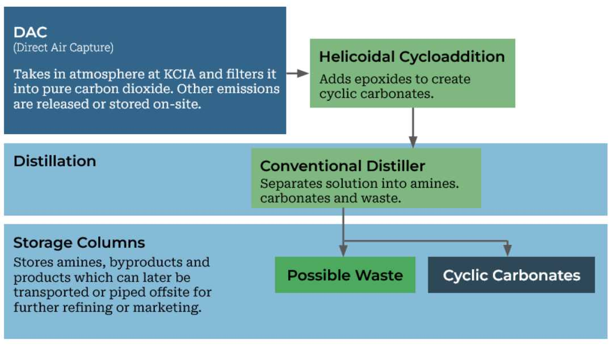

Affiliated
with collaborative and peer-reviewed projects everywhere, our team at
Haänsen is dedicated to finding solutions and bridging gaps that differ
from the status quo. Spanning chemical research, civil infrasture
development, data workflow organization, and environmental management,
we pride ourselves in our vast portfolio of proposals and
implementations.
Hallmark 2024 Research
In
2024, we collaborated with leading carbon emission chemists from around
the world to develop a theoretical carbon conversion system. Utilizing
atmospheric air polluted with aviation emissions pulled into several
direct air capture units, it would subsequently undergo mild filtration
for an <80% pure carbon airflow.
Powered
by a helicoidal cycloadditive reactor that is pumped with epoxides in
the presence of an embedded catalyst, the airflow is synthesized into
glycerol carbonates with uses in the production of polymers and
electrolytes.

Contact Us
Please contact us via info@haansen.com for any inquiries pertaining to our services, documentation, or careers.